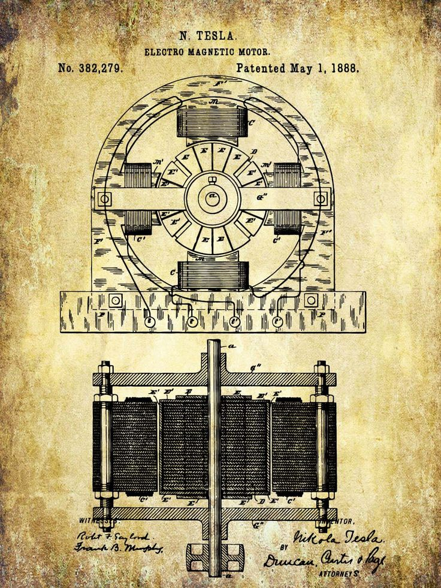

Nikola Tesla
Engineer, Inventor
Inventor Nikola Tesla was born in July of 1856, in what is now Croatia. He came to the United States in 1884 and briefly worked with Thomas Edison before the two parted ways. He sold several patent rights, including those to his alternating-current machinery, to George Westinghouse. His 1891 invention, the "Tesla coil," is still used in radio technology today. Tesla died in New York City on January 7, 1943.
- Tesla Quotes
- List of Tesla Patents
Wardenclyffe Project
Since Tesla's original forfeiture of his Wardenclyffe site, ownership of the property has passed through numerous hands, and several attempts have been made to preserve it, but in 1967, 1976 and 1994 efforts to have it declared a national historic site failed. Then, in 2008, a group called the Tesla Science Center was formed with the intention of purchasing the property and turning it into a museum dedicated to the inventor's work.
Contribution
Nikola Tesla contributed to the development of the alternating-current electrical system that's widely used today and discovered the rotating magnetic field (the basis of most AC machinery).
Click here to view original biography source